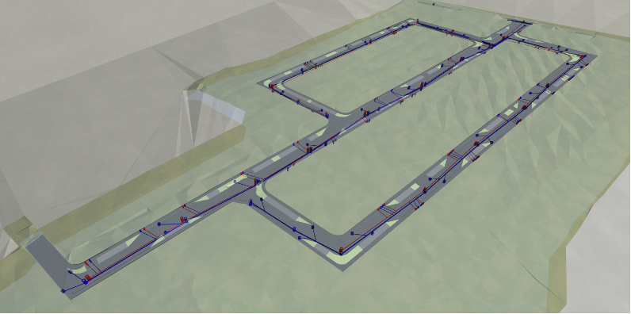
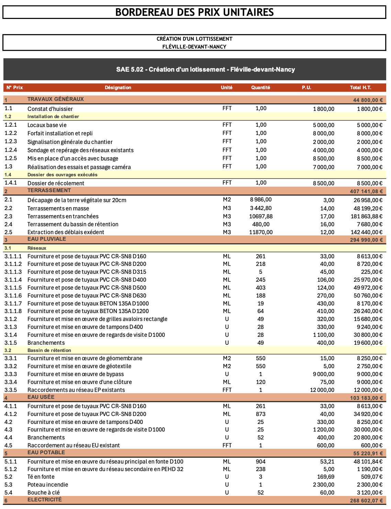
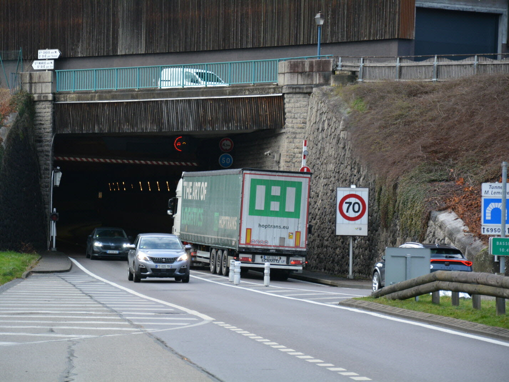

Culture constructive
Lecture et production de plans, compréhension des systèmes porteurs, charpentes, ossatures bois, enveloppe, principes de CVC et étude thermique d’un bâtiment.
IUT · BUT GCCD · Parcours Travaux Publics
Pendant ces trois années de BUT Génie Civil — Construction Durable, j’ai progressivement construit une méthode de travail technique : analyser un site, lire et produire des plans, dimensionner des ouvrages simples, organiser un chantier et présenter des choix de manière claire. Mon parcours s’est principalement orienté vers les Travaux Publics, tout en conservant une culture générale du bâtiment indispensable pour comprendre un projet dans son ensemble.

Bilan de formation
Le BUT GCCD m’a permis d’aborder les différentes familles du génie civil : bâtiment, travaux publics, dimensionnement, organisation de chantier et suivi technique. Cette vision globale est importante, car un projet de VRD ou d’aménagement ne se limite jamais à une seule compétence : il croise le terrain, les réseaux, les structures, les contraintes réglementaires, le coût, le planning, la sécurité et la qualité du rendu.
Lecture et production de plans, compréhension des systèmes porteurs, charpentes, ossatures bois, enveloppe, principes de CVC et étude thermique d’un bâtiment.
Conception de voiries, profils en long et en travers, réseaux EU/EP/AEP, terrassements, chaussées, altimétrie, accessibilité, signalisation et raccordements à l’existant.
Vérification d’ordres de grandeur, choix de diamètres, structure de chaussée, gestion des eaux pluviales, bassin de rétention, éclairage public et alimentation basse tension.
Phasage, planning, PIC, sécurité, PPSPS, CCTP, métrés, BPU, DQE, sous-détails de prix, gestion des interfaces et anticipation des contraintes d’exécution.
Rédaction de rapports, soutenances, présentation des hypothèses, justification des choix techniques et mise en forme de documents exploitables par un lecteur extérieur.
Projets significatifs
Les projets présentés ci-dessous montrent l’évolution entre la conception d’un aménagement, la préparation opérationnelle d’un chantier, puis l’analyse d’un ouvrage existant avec des enjeux de sécurité et d’exploitation.
SAÉ 5.01 · Conception VRD
Cette SAÉ portait sur la création d’un lotissement d’habitations à Fléville-devant-Nancy. Le projet demandait de proposer un aménagement cohérent à partir d’un terrain non bâti : découpage des lots, insertion dans le tissu urbain, voirie, cheminements piétons, stationnements, réseaux et gestion des eaux pluviales.
Document graphique
Ce document permet de visualiser rapidement la logique du projet : organisation de la voirie, espaces verts, stationnements, profils et principes de réseaux. Il sert de preuve visuelle forte pour montrer le passage d’une analyse de terrain à un document technique exploitable.

SAÉ 5.02 · Préparation chantier
La deuxième SAÉ prolonge le projet de lotissement avec une approche plus orientée chantier. L’objectif était de passer d’un projet conçu à une opération préparée : prescriptions techniques, organisation de l’installation, planning, sécurité, métrés, prix et documents de consultation ou d’exécution.

SAÉ 5.03 · Ouvrage existant
Cette SAÉ m’a permis de travailler sur un ouvrage existant avec des problématiques d’exploitation et de sécurité. Le rapport traite du renouvellement des barrières de fermeture du tunnel Maurice-Lemaire et de l’amélioration de la compréhension de la signalisation par les usagers.
PDF intégré
Méthode de travail
Ces SAÉ m’ont surtout appris à relier les documents entre eux. Un plan n’est pas seulement un dessin : il doit permettre de chiffrer, de planifier, d’exécuter et de contrôler. De la même manière, un rapport technique doit être compréhensible pour quelqu’un qui ne connaît pas encore le projet. J’ai donc progressé à la fois dans la précision technique, la cohérence des hypothèses et la qualité de présentation.
Orientation
Mon parcours s’est naturellement orienté vers les Travaux Publics, notamment grâce aux projets de voirie, réseaux, terrassements, assainissement, éclairage public, chiffrage et préparation de chantier. Pour autant, les trois années de BUT m’ont également donné des bases solides en bâtiment : lecture de plans, méthodes constructives, structure, matériaux, thermique, ossature bois, charpente, BIM et organisation de projet.
Cette double culture est importante pour mon projet professionnel, car les opérations réelles mélangent souvent aménagement extérieur, réseaux, bâtiment, exploitation, contraintes économiques et coordination entre plusieurs acteurs.